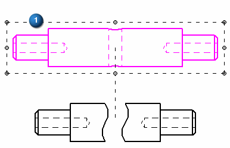
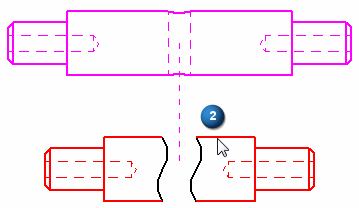
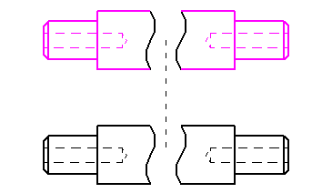

Copy break lines between drawing views
You can copy and align break lines between drawing views using the Inherit Break Lines command. This creates an associative relationship between the views. When you edit the break lines in the source view, the inherited break lines also update.
You can remove the break line relationship using the Remove Break Line Inheritance command.
Inherit break lines
-
On the drawing sheet, right-click a principal, auxiliary, or section view (1).
The view you select must be aligned with a source view.

-
From the shortcut menu, choose the Inherit Break Lines command.
-
Click the source drawing view with the break lines you want to copy (2).

The current drawing view is updated and aligned to the break lines of the view you selected.

-
If you apply break lines to a drawing view before you create a folded view, then the break lines are inherited by the folded view automatically.
-
You cannot directly edit the break lines in the folded view, but you can modify the break lines in the source view to update the folded view. To make the source view break lines accessible for editing, you must first deselect the Show Broken View button
 on the Drawing View Selection command bar.
on the Drawing View Selection command bar.
Remove an inherited break line relationship
-
Right-click the drawing view.
-
Select the Remove Break Line Inheritance command from the shortcut menu.
The break lines still exist on the drawing view, but they are not associative to the break lines in the source view.
-
Another way to remove the relationship is to select the Delete Alignment command from the shortcut menu, and then click the alignment line between the drawing views.
-
Once the relationship is removed, you can delete the break lines using the Deleted key.
How do I
Create a broken-out section viewModify a broken-out section view
Create a broken view
Break an isometric view with a break axis
Connect a break line at a distance
Display break lines and cropped edges in a broken view
Modify break lines in a broken view
Remove inherited break lines
Learn more
Broken viewsLook up more details
Broken-Out commandBroken View command
Broken View command bar
Inherit Break Lines command
Remove Break Line Inheritance command